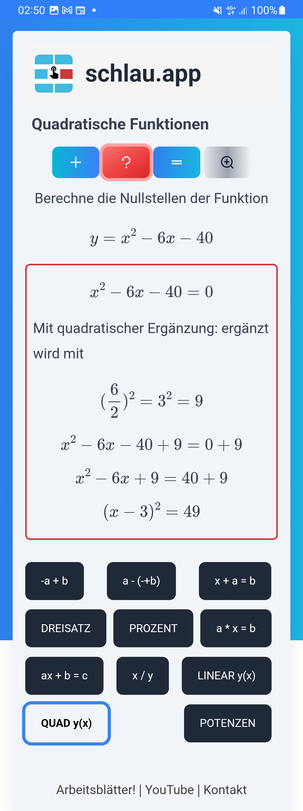
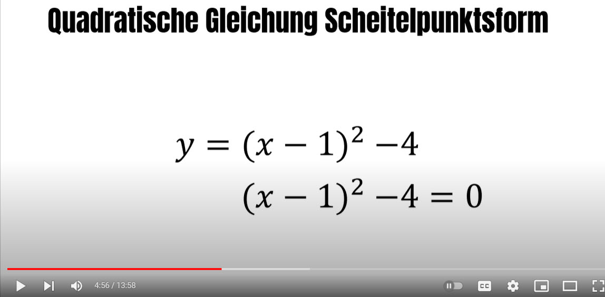

Quadratische Gleichungen
Nullstellen quadratischer Funktionen berechen

Zu quadratischen Gleichungen, ein Standard in der Mathematik der Mittelstufe, gibt es verschiedene Formate. Die allgemeine Form ist
- ax2 + bx + c = 0
Für die Berechnung der Nullstellen können wir auch (Gleichung durch a dividieren!) ansetzen
- x2 + px + q = 0
Für diese Form - wo also beim x2 kein Faktor (somit der Faktor 1) steht - können wir die beliebte pq-Formal anwenden.
Ein weiteres Verfahren (das man sich am besten ebenfalls für das einfache pq-Format einprägt), ist die quadratische Ergänzung.
Die Mathe-App schlau.app bietet für die Lösungen abwechselnd die pq-Formal und die quadratische Ergänzung an. Außerdem gibt es außer der normalen pq-Form noch die homogene quadratische Gleichung (wenn q=0) und die reinquadratische Gleichung (wenn p=0). Beispielaufgaben sind also:
- y = x2 - 6x - 40
Standardfall. Help & Explainer werden abwechseln für pq und QE angezeigt - Nullstellen im homogenen Fall: y = x2 - 4x
- Nullstellen der Funktion y = x2 - 25
Dies ist der Funktionsumfang von schlau.app in Version 1. Es werden noch viele interessanten Themen hinzukommen, z.B. Nullstellen mit der Scheitelpunktform und die verschiednen Form-Parameter der Parabeln.


Tricks für quadratische Funktionen
Die Graphik ist wichtig, sie gehört dazu. Du solltest außer dem Geodreieck auch eine Quadrat-Schablone haben.
Aber, was Graphik betrifft, hier ein viel wichtiger Trick, um mit quadratischen Funktionen fit zu sein: Lerne, jederzeit eine Planfigur einer Parabel (erst normal, dann auch gestaucht oder gestreckt) freihändig zu zeichnen. Nimm ein Punkte bei den x-Werten von -3 bis 3 und verbinde sie, so dass es korrekt aussieht. Du wirst überrascht sein, wieviel du freihändig erreichen kannst!
Zum Merken (am besten in Stein meiseln): "Ergänzt wird mit dem halben, quadrierten Koeffizienten von x".